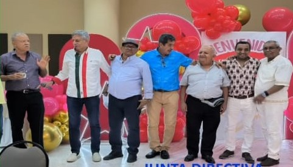
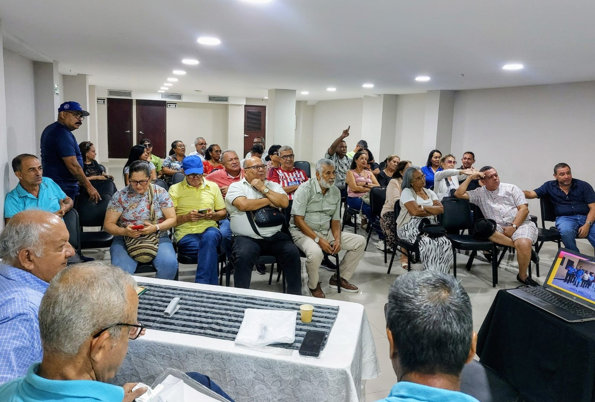
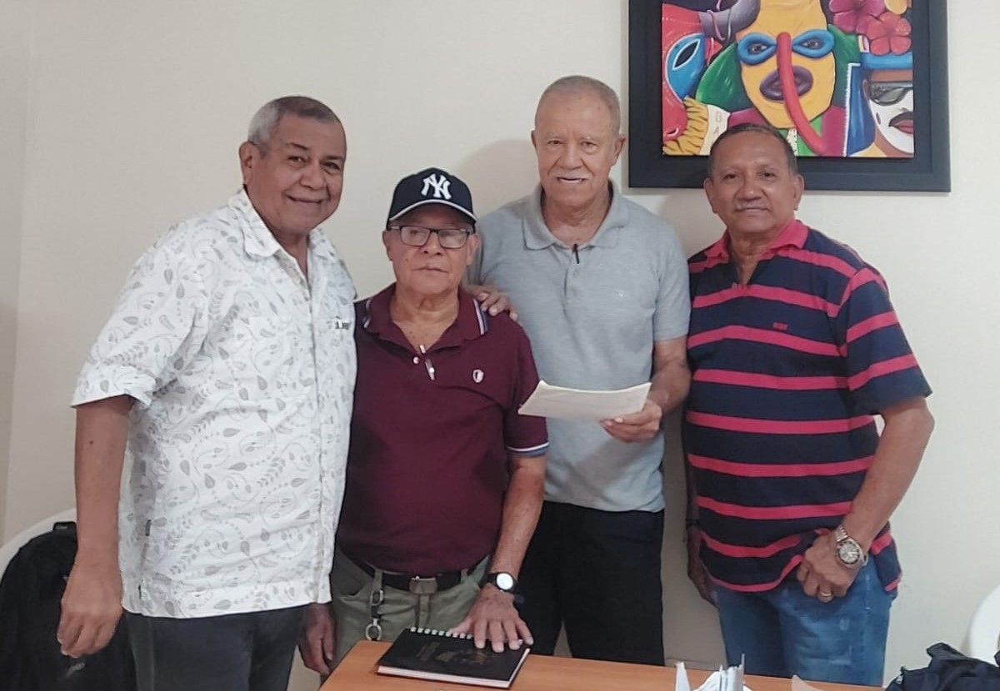
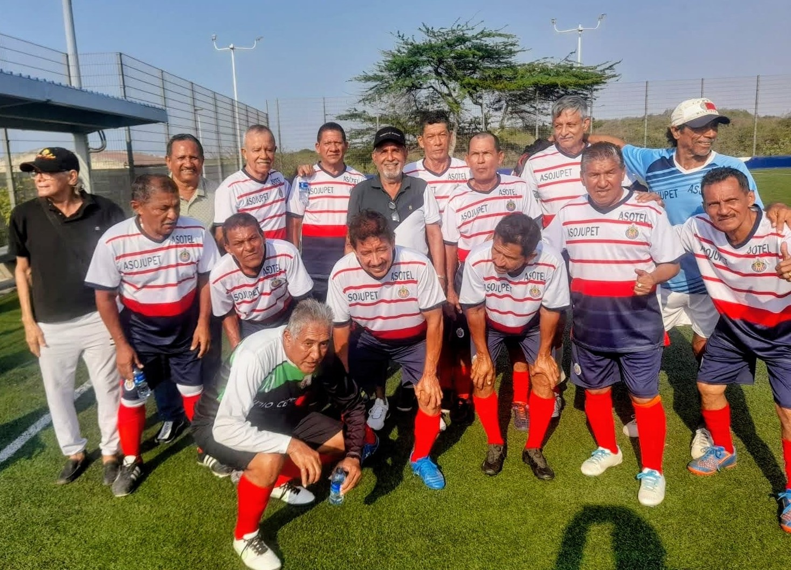
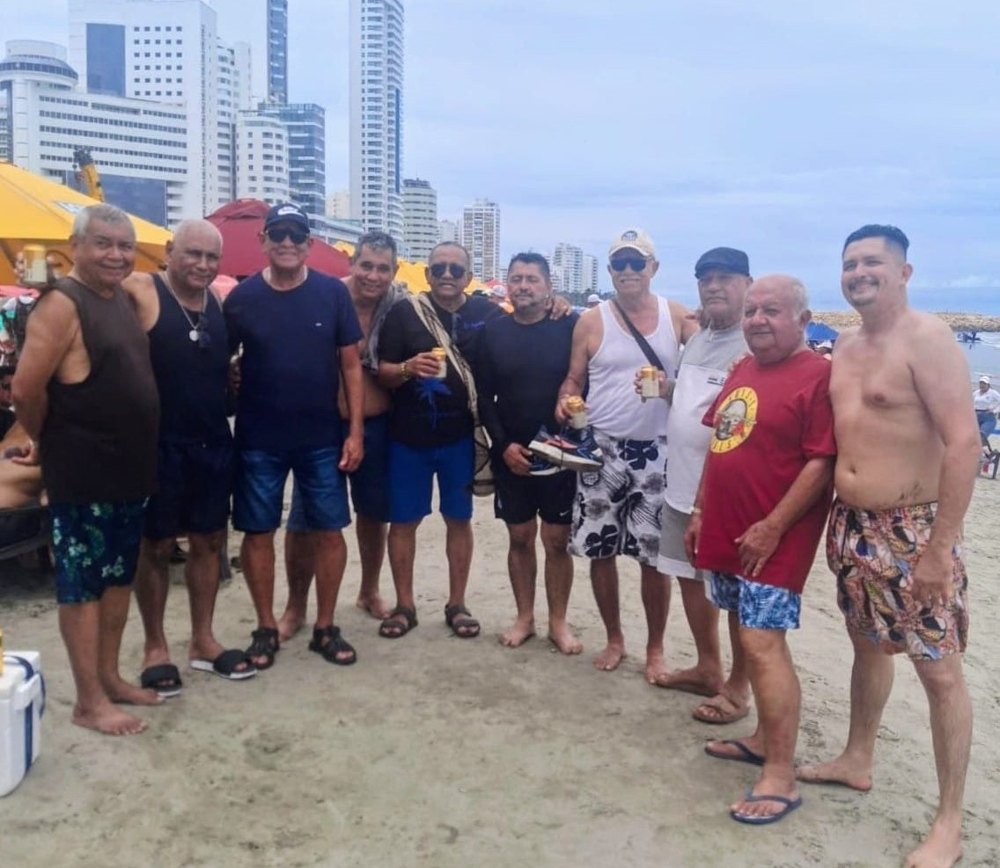
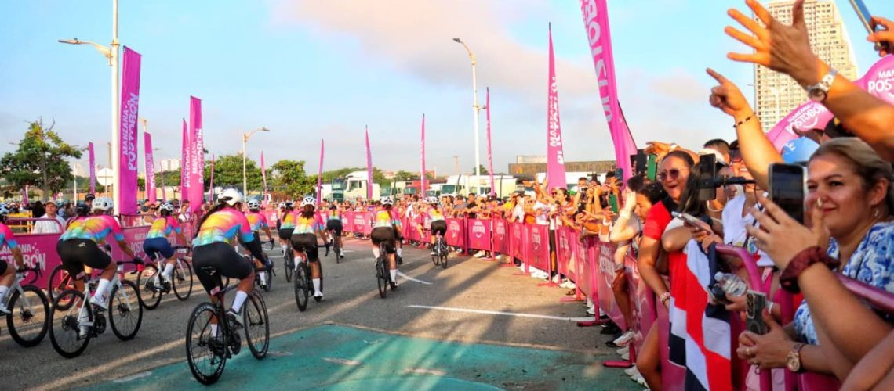

Participación de Asotel el primero de mayo
Donde participaron muchas organizaciones apoyando el llamado de nuestro presidente.
Asociación de Técnicos Pensionados de la EDT

Conformada por: Presidente. Alfredo Perez. Fiscal: Roberto Donado. Secretario: Cesar Solsno. Tesorero: Timoleon Guarguati. Vocales: Gilberto Salas. Jose Suarez. Jose Rodriguez.
Donde participaron muchas organizaciones apoyando el llamado de nuestro presidente.

El cual se trataron temas de mucha importancia para el desarrollo la sociedad.

Amigos de Asotel, con el asosiado Fermin Jimenez. La suma de $2`640.000

Equipo de asotel que participó en campeonato de Puerto Colombia, y que tuvo un buen desempeño futbolistico y ocupo un puesto muy significativo en la tabla de puntuación.
El presidente Gustavo Petro ratificó su compromiso con la protección de los fondos de pensiones y anunció nuevos mecanismos de control y transparencia.

La gran mayoría de los socios se mostraron muy contentos en las playas de cartagena y agradecieron a Asotel por este encuentro.
En el marco de la conmemoración del Día Internacional del Trabajo, Asotel tuvo una destacada participación en la jornada del primero de mayo, un evento que reunió a diversas organizaciones sociales, sindicales y comunitarias. La presencia de la asociación se sumó al amplio respaldo ciudadano al llamado realizado por el presidente, en defensa de los derechos laborales, la dignificación del empleo y el fortalecimiento de las garantías para los trabajadores del país. La jornada transcurrió en un ambiente de unidad, reflexión y compromiso colectivo, donde la voz de los diferentes sectores sirvió para resaltar la importancia del diálogo social y la construcción conjunta de un país más justo e inclusivo.
Durante el encuentro se abordaron temas de gran relevancia para el desarrollo social, entre ellos la promoción de condiciones laborales dignas, el fortalecimiento de las políticas públicas orientadas al bienestar colectivo y la necesidad de avanzar en proyectos que impulsen la equidad y el progreso comunitario. Las discusiones reflejaron un profundo interés por construir soluciones que respondan a las realidades actuales del país y que contribuyan de manera efectiva al crecimiento y la cohesión de la sociedad.
Amigos de Asotel, con el asosiado Fermin Jimenez. La suma de $2`640.000
El equipo de Asotel tuvo una destacada participación en el campeonato realizado en Puerto Colombia, donde demostró un desempeño futbolístico sólido, disciplinado y comprometido. A lo largo del torneo, los jugadores mostraron un alto nivel competitivo que les permitió mantenerse entre los primeros puestos, alcanzando una ubicación muy significativa en la tabla de puntuación.
El presidente Gustavo Petro ratificó su compromiso con la protección de los fondos de pensiones y anunció la implementación de nuevos mecanismos de control y transparencia dentro del sistema pensional colombiano. Estas medidas buscan garantizar la seguridad financiera de los trabajadores y asegurar que los recursos destinados a su jubilación sean administrados de manera responsable y equitativa. “Nuestro objetivo no es desmantelar lo construido, sino corregir las inequidades que durante años han afectado a los trabajadores de menores ingresos. Queremos un sistema solidario, donde quienes más tienen aporten para garantizar la vejez digna de quienes más lo necesitan”, afirmó Petro durante su intervención. Según el Ministerio de Hacienda, una de las principales innovaciones será la creación de un Observatorio de Transparencia Pensional, encargado de monitorear los movimientos financieros de los fondos y de publicar informes trimestrales accesibles al público. Esta iniciativa busca frenar posibles irregularidades y fortalecer la confianza ciudadana en el sistema. Además, se anunció que los trabajadores con ingresos inferiores a cuatro salarios mínimos continuarán cotizando en Colpensiones, mientras que los de mayores ingresos podrán mantener aportes complementarios en fondos privados, con el fin de preservar la libre elección y la estabilidad del mercado financiero. Expertos en economía y seguridad social destacan que esta actualización del modelo pensional representa un paso importante hacia un sistema más sostenible, pero advierten sobre los retos que implica su implementación. La economista María Fernanda Gutiérrez señaló que “el éxito de la reforma dependerá de la capacidad del Estado para gestionar los recursos con independencia política y rigor técnico”. El Gobierno confirmó que el nuevo modelo será presentado ante el Congreso de la República en el primer semestre de 2026, acompañado de una campaña pedagógica para informar a los ciudadanos sobre los cambios y beneficios de la reforma. Durante una alocución nacional desde la Casa de Nariño, el mandatario explicó que la reforma pensional en curso no busca eliminar los fondos privados, sino fortalecer el papel del Sistema Público de Pensiones (Colpensiones), mejorando su eficiencia y asegurando una distribución más justa entre los cotizantes.
La jornada en las playas de Cartagena fue recibida con entusiasmo por la mayoría de los socios, quienes expresaron su alegría y satisfacción por el encuentro organizado. El ambiente de integración, acompañado del paisaje costero, permitió fortalecer lazos y compartir momentos de convivencia que enriquecieron la experiencia colectiva. Muchos asistentes manifestaron su agradecimiento a Asotel por promover este tipo de espacios recreativos, que contribuyen al bienestar, la unión y el fortalecimiento de la comunidad asociada.
Josabeth Carolina Morales Durán, representante del barrio Olaya Herrera, Sector Central, en el Reinado de la Independencia de Cartagena 2025: Barrio y Sector: Olaya Herrera, Sector Central. Edad y Profesión: Tiene 20 años y es Ingeniera Industrial. Logros Destacados: Ganó el premio al mejor disfraz en la Noche de Tradición Festiva con un homenaje al cantante de salsa Joe Arroyo, conocido como "el Centurión de la salsa". Proyecto Comunitario: Su proyecto se titula "Olaya vive las fiestas bogando nuestra identidad". Objetivo del Proyecto: Busca mantener viva la tradición del 11 de noviembre en la memoria de niños, jóvenes y adultos, a través de actividades culturales como cabildos. Trayectoria: Es una joven que, según fuentes locales, encarna el espíritu vibrante y la fuerza comunitaria de su barrio. También se ha mencionado que ha brillado en otros espacios, como el programa televisivo "Desafío". Presentación Oficial: Su presentación oficial como candidata tuvo lugar en el Camellón de los Mártires, un evento que marcó el inicio de las fiestas. Josabeth Carolina Morales Durán.
El ministro de Defensa, Pedro Sánchez, atribuyó a las disidencias de alias Iván Mordisco el atentado con carrobomba que fue perpetrado en la madrugada de este lunes festivo cerca de la estación de Policía del municipio de Suárez, Cauca, dejando como saldo dos personas muertas. “Rechazo el cobarde atentado terrorista perpetrado por las disidencias del narco-criminal alias Mordisco en Suárez, Cauca, mediante un vehículo cargado con explosivos, lanzamiento de cilindros y ráfagas de fusil que habrían asesinado a dos civiles y herido a un policía”, escribió el ministro en su cuenta de X.Agregó que “este hecho demuestra el desespero cobarde de la estructura criminal ante la pérdida de control territorial y el debilitamiento de sus finanzas ilegales derivadas del narcotráfico, la minería ilegal y la extorsión, esto como resultado de la presión sostenida de nuestras Fuerzas Militares y de Policía”.El jefe de la cartera de Defensa ofreció hasta $200 millones de recompensa por información que “permita anticipar y evitar hechos similares”. Asimismo, anunció que se reunió este lunes con la cúpula militar y policial, y después lo hará con autoridades regionales para fortalecer las operaciones que se han adelantando en Valle del Cauca, Cauca y Nariño, “donde hemos neutralizado a 724 integrantes de los GAO (23 % más que en el 2024)”, destacó.
Juan Gabriel, el artista que siempre pensó en la eternidad.

El Giro de RIGO; mas de 8.000 ciclistas dieron inicio al primer evento en la ciudad de barranquilla de esta categoria
Trump cuestiona una guerra con Venezuela, pero advierte que Maduro tendría los días contados.
Gobierno anuncia nuevas medidas tras denuncias de líderes sociales.